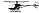

 Clip-path Demo Tomasz
Clip-path est une propriété css qui permet de montrer une partie specifiée d'un élément et cacher tout le reste. Clip-path est utilisée la plupart du temps pour des images mais peut etre également utilisé sur du texte.
L'élément garde sa taille originale même s'il n'est pas entièrement visible.
Ce qui est intéressant c'est qu'on peut lui mettre une transition pour donner un effet au click ou au survol.
Image originale

Clip-path inset
clip-path: inset(209px 400px 193px 11px);
/* les valeurs sont dans le sens de l'éguie d'une montre */
transition: 0.3s all ease-in-out;
&:hover{
clip-path: inset(209px 242px 193px 11px);
}
Clip-path Circle
clip-path: circle(10% at 43% 53%);
transition: 0.3s all ease-in-out;
&:hover{
clip-path: circle(100% at 43% 53%);
}
Clip-path Ellipse
clip-path: ellipse(150px 100px at 31% 50%);
transition: 0.3s all ease-in-out;
&:hover{
clip-path: ellipse(400px 400px);
}
Clip-path Polygon
clip-path: polygon(50% 0, 100% 50%, 50% 100%, 0 50%);
transition: 0.3s all ease-in-out;
&:hover{
clip-path: polygon(25% 0, 100% 50%, 75% 100%, 0 50%);
}
Clip-path url
clip-path: url(#myPath)